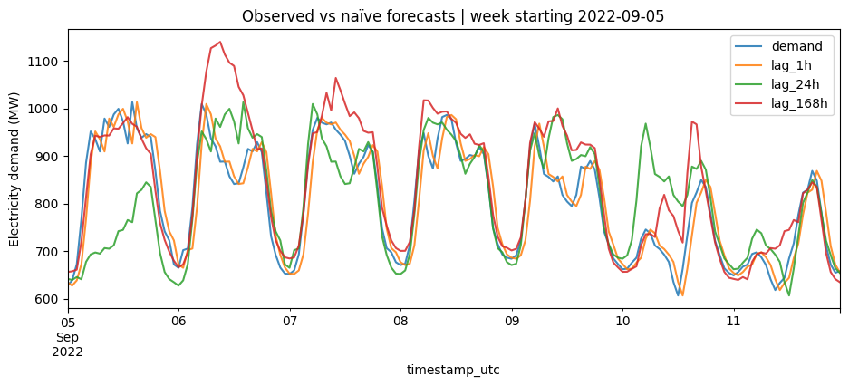
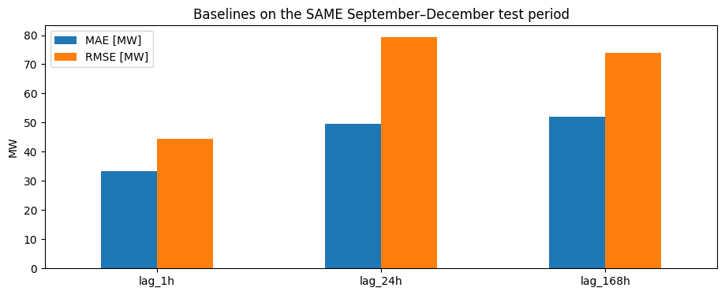
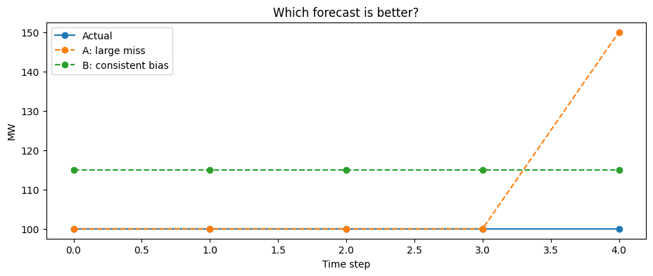
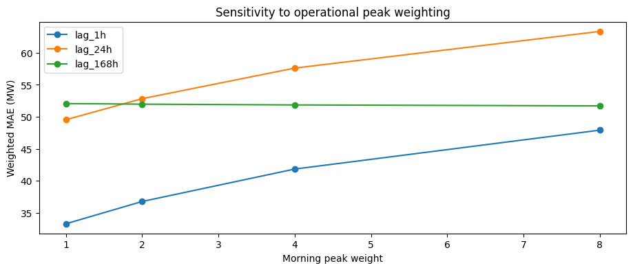
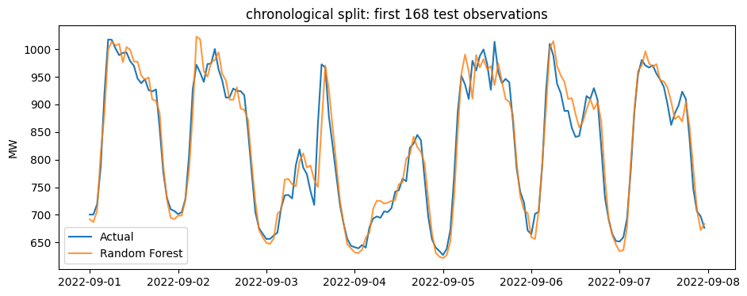
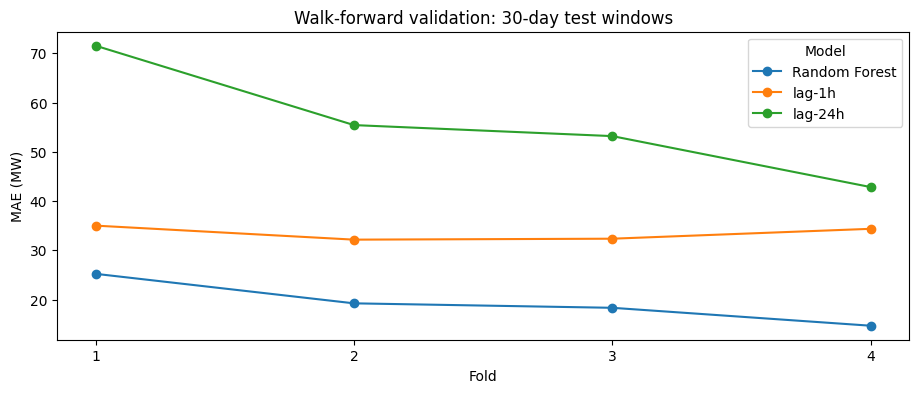

⚡ LAB: Baselines & Evaluation#
Topic: What makes one electricity-demand forecast better than another?
How to work: Run cells from top to bottom. Most code is already written: change only values marked ✏️ CHANGE, inspect the graphs, and type short answers in the text boxes below each task. An LLM may help you explain your results, but verify its claims with calculations.
Learning outcomes: (1) define a forecast horizon; (2) compare lag-1h / lag-24h / lag-168h baselines; (3) interpret MAE, RMSE, MAPE and nRMSE; (4) evaluate operationally important hours; (5) avoid time-series leakage; (6) assess a Random Forest with walk-forward validation.
Important comparison rule: Here the actual prediction task is one hour ahead: predict consumption at hour t using information available before t. The Elering “planned consumption” column is useful for descriptive comparison, but its publication/issue time is not provided in this dataset; therefore we do not claim it was available with the same one-hour lead time as our baselines and ML model.
1. Load hourly Estonian demand#
We load the Elering 2022 CSV directly from the course GitHub repository, without saving a local copy. The file uses a semicolon separator and a comma as decimal symbol.
We index observations by UTC timestamps. This preserves a regular 1-hour sequence across daylight-saving time changes. For plotting or grouping by local hour, we explicitly convert the timestamps to Europe/Tallinn.
import numpy as np
import pandas as pd
import matplotlib.pyplot as plt
from sklearn.ensemble import RandomForestRegressor
from sklearn.metrics import mean_absolute_error, mean_squared_error
from sklearn.model_selection import train_test_split
pd.set_option('display.max_columns', 20)
plt.rcParams['figure.figsize'] = (11, 4)
DATA_URL = (
'https://raw.githubusercontent.com/drmatson/energy_informatics/main/data/'
'electricity-production%20and%20consumption_2022.csv'
)
raw = pd.read_csv(DATA_URL, sep=';', decimal=',')
raw['timestamp_utc'] = pd.to_datetime(raw['Ajatempel (UTC)'], unit='s', utc=True)
raw = raw.sort_values('timestamp_utc').set_index('timestamp_utc')
energy = pd.DataFrame(index=raw.index)
energy['demand'] = pd.to_numeric(raw['Tarbimine'], errors='coerce')
energy['planned'] = pd.to_numeric(raw['Planeeritud tarbimine'], errors='coerce')
energy['local_hour'] = energy.index.tz_convert('Europe/Tallinn').hour
energy['day_of_week'] = energy.index.tz_convert('Europe/Tallinn').dayofweek
print('Rows:', len(energy))
print('Date range (UTC):', energy.index.min(), 'to', energy.index.max())
print('Missing values:', energy[['demand','planned']].isna().sum().to_dict())
print('Time-step distribution:', energy.index.to_series().diff().value_counts().head(3).to_dict())
display(energy.head())
Rows: 8760
Date range (UTC): 2021-12-31 22:00:00+00:00 to 2022-12-31 21:00:00+00:00
Missing values: {'demand': 0, 'planned': 0}
Time-step distribution: {Timedelta('0 days 01:00:00'): 8757, Timedelta('0 days 00:00:00'): 1, Timedelta('0 days 02:00:00'): 1}
| demand | planned | local_hour | day_of_week | |
|---|---|---|---|---|
| timestamp_utc | ||||
| 2021-12-31 22:00:00+00:00 | 899.4 | 903.1 | 0 | 5 |
| 2021-12-31 23:00:00+00:00 | 892.1 | 935.8 | 1 | 5 |
| 2022-01-01 00:00:00+00:00 | 874.3 | 897.6 | 2 | 5 |
| 2022-01-01 01:00:00+00:00 | 860.1 | 878.5 | 3 | 5 |
| 2022-01-01 02:00:00+00:00 | 842.7 | 891.1 | 4 | 5 |
✏️ Task 1 — Check the data#
How many hourly observations are there? How many missing demand values?
Why is it safer to use the UTC timestamp for
shift(24)than local timestamps around DST transitions?Does
shift(24)always mean “same wall-clock hour yesterday” in Tallinn?
Your answer:
1: …
2: …
3: …
🧑🏫 Reference answers
Instructor reference answer (Task 1)
For the original course file: 8760 hourly records for 2022 (365 × 24); verify missingness from
energy.isna().sum().A UTC-based index maintains a regular elapsed-hour sequence even during the daylight-saving switch.
shift(24)means 24 elapsed hours, not necessarily the same local clock hour on DST-change days. Do not silently claim exact same-time-yesterday equivalence.
2. Three reference forecasts#
For each target hour t, a lag baseline predicts using a previously observed value. These are valid for our one-hour-ahead setup because all three lagged values are in the past.
Lag-1h: previous hour’s demand
Lag-24h: demand 24 elapsed hours earlier
Lag-168h: demand 168 elapsed hours earlier (one elapsed week)
Change the plotted week to a different week in 2022, rerun, and compare the shapes.
# ✏️ CHANGE: try other 2022 weeks, e.g. '2022-02-07' or '2022-10-24'
START_WEEK = '2022-09-05'
for hours in [1, 24, 168]:
energy[f'lag_{hours}h'] = energy['demand'].shift(hours)
# One shared test set for every baseline; train/test separation is chronological.
split_time = pd.Timestamp('2022-09-01', tz='UTC')
valid = energy.dropna(subset=['demand', 'lag_1h', 'lag_24h', 'lag_168h']).copy()
test = valid.loc[valid.index >= split_time].copy()
week_start = pd.Timestamp(START_WEEK, tz='UTC')
week_end = week_start + pd.Timedelta(days=7)
week = test.loc[(test.index >= week_start) & (test.index < week_end)]
assert len(week) > 0, 'Select a test week on or after 2022-09-01 (UTC).'
week[['demand','lag_1h','lag_24h','lag_168h']].plot(
title=f'Observed vs naïve forecasts | week starting {START_WEEK}',
ylabel='Electricity demand (MW)', alpha=.85
)
plt.show()

def score_forecast(y_true, y_pred):
"""MAE [MW], RMSE [MW], MAPE [%], and mean-normalized RMSE [%]."""
y_true = np.asarray(y_true, dtype=float)
y_pred = np.asarray(y_pred, dtype=float)
mask = np.isfinite(y_true) & np.isfinite(y_pred)
yt, yp = y_true[mask], y_pred[mask]
if len(yt) == 0:
raise ValueError('No valid observations')
mae = np.mean(np.abs(yt - yp))
rmse = np.sqrt(np.mean((yt - yp)**2))
# Percentage-based metrics are undefined for zero observed values.
nonzero = np.abs(yt) > 1e-12
mape = (np.mean(np.abs((yt[nonzero] - yp[nonzero]) / yt[nonzero])) * 100
if np.any(nonzero) else np.nan)
scale = np.mean(np.abs(yt))
nrmse = (100 * rmse / scale) if scale > 0 else np.nan
return {'MAE [MW]': mae, 'RMSE [MW]': rmse,
'MAPE [%]': mape, 'nRMSE/mean [%]': nrmse}
baseline_columns = ['lag_1h', 'lag_24h', 'lag_168h']
baseline_scores = pd.DataFrame({
name: score_forecast(test['demand'], test[name]) for name in baseline_columns
}).T.round(2)
display(baseline_scores)
baseline_scores[['MAE [MW]', 'RMSE [MW]']].plot.bar(
title='Baselines', rot=0
)
plt.ylabel('MW')
plt.show()
| MAE [MW] | RMSE [MW] | MAPE [%] | nRMSE/mean [%] | |
|---|---|---|---|---|
| lag_1h | 33.32 | 44.42 | 3.57 | 4.65 |
| lag_24h | 49.55 | 79.39 | 5.23 | 8.31 |
| lag_168h | 52.06 | 73.99 | 5.40 | 7.74 |

✏️ Task 2 — Evaluate baselines#
Small code edit: In START_WEEK, change one date and rerun the graph. Then interpret the evaluation table.
Which baseline has the lowest test MAE? Does the RMSE ranking agree?
Why can lag-1h look excellent for one-hour-ahead forecasting but be invalid for a forecast issued 24 hours before the target?
Why are the three baselines more informative than a single number like “RMSE = 50”?
Your answer: …
🧑🏫 Reference answers
Instructor reference answer (Task 2)
Lag-1h is available for a rolling one-hour-ahead task. For a day-ahead forecast issued before the day starts, many “previous hour” values lie after issue time and are unavailable.
Baselines provide a difficulty floor, context and an honest reference; comparison also requires the same evaluation window and horizon.
3. One forecast, several metrics#
The same forecasts can be ranked differently by different metrics. MAE treats errors linearly; RMSE penalizes large misses more heavily. MAPE highlights relative errors but is undefined when the actual value is zero. nRMSE only becomes meaningful when the normalization method is specified.
Change SPIKE and BIAS in the toy example. Can you make the metrics prefer different forecasts?
actual = np.array([100., 100., 100., 100., 100.])
# ✏️ CHANGE these two parameters (e.g., SPIKE=50 and BIAS=15)
SPIKE = 50.
BIAS = 15.
forecast_a = actual + np.array([0., 0., 0., 0., SPIKE])
forecast_b = actual + BIAS
toy_scores = pd.DataFrame({
'A: one large miss': score_forecast(actual, forecast_a),
'B: small constant bias': score_forecast(actual, forecast_b)
}).T.round(2)
display(toy_scores)
fig, ax = plt.subplots()
ax.plot(actual, 'o-', label='Actual')
ax.plot(forecast_a, 'o--', label='A: large miss')
ax.plot(forecast_b, 'o--', label='B: consistent bias')
ax.set(title='Which forecast is better?', xlabel='Time step', ylabel='MW')
ax.legend(); plt.show()
print('MAE winner:', toy_scores['MAE [MW]'].idxmin())
print('RMSE winner:', toy_scores['RMSE [MW]'].idxmin())
| MAE [MW] | RMSE [MW] | MAPE [%] | nRMSE/mean [%] | |
|---|---|---|---|---|
| A: one large miss | 10.0 | 22.36 | 10.0 | 22.36 |
| B: small constant bias | 15.0 | 15.00 | 15.0 | 15.00 |

MAE winner: A: one large miss
RMSE winner: B: small constant bias
✏️ Task 3 — Are metric choices neutral?#
With the starting parameters, which forecast wins MAE, and which wins RMSE? Explain mathematically.
Which metric would you prioritize if one large missed peak could cause an operational problem?
What happens to MAPE if a dataset contains real zeros? How should those cases be handled?
Your answer: …
🧑🏫 Reference answers
Instructor reference answer (Task 3)
For the initial parameters, forecast A has one error of 50 MW and four zero errors; forecast B has five errors of 15 MW. A: MAE = 10 MW, RMSE ≈ 22.36 MW. B: MAE = 15 MW, RMSE = 15 MW. Therefore MAE prefers A and RMSE prefers B.
If a large peak miss is particularly harmful, RMSE may be more useful than MAE, but a domain-specific asymmetric cost can be better still.
Standard MAPE is undefined at
y_true=0. The helper above excludes zero targets and changes the scope, which must be disclosed. Other possibilities: evaluate a suitable alternative metric and report the zero-target subset separately.
4. Make the metric care about the morning peak#
An electricity-system operator might care more about errors during 07:00–09:59 Tallinn time than overnight. We can explicitly specify a domain-weighted MAE. The weight is a design decision, not a universal truth.
Change MORNING_WEIGHT to 1, 3, and 8. The code also shows a small deterministic example where the winner changes when the morning peak matters more.
def weighted_mae(actual, prediction, hours, peak_weight=3.0):
y = np.asarray(actual, dtype=float)
p = np.asarray(prediction, dtype=float)
h = np.asarray(hours)
weights = np.where((h >= 7) & (h < 10), peak_weight, 1.0)
return np.average(np.abs(y - p), weights=weights)
# ✏️ CHANGE to 1, 3, or 8
MORNING_WEIGHT = 3
operational_scores = {
name: weighted_mae(test['demand'], test[name], test['local_hour'], MORNING_WEIGHT)
for name in baseline_columns
}
print(f'Weighted MAE at morning weight {MORNING_WEIGHT}:')
display(pd.Series(operational_scores, name='Weighted MAE [MW]').sort_values().round(2))
weights_to_test = [1, 2, 4, 8]
sweep = pd.DataFrame({
w: {name: weighted_mae(test['demand'], test[name], test['local_hour'], w)
for name in baseline_columns}
for w in weights_to_test
}).T
sweep.index.name = 'Morning peak weight'
sweep.plot(marker='o', title='Sensitivity to operational peak weighting', ylabel='Weighted MAE (MW)')
plt.show()
# Controlled decision case: same target, two forecasts with errors in different hours.
decision_hours = np.array([2, 3, 7, 8, 9, 14])
decision_actual = np.full(6, 100.)
decision_a = decision_actual + np.array([25,25,0,0,0,25]) # lower peak error
decision_b = decision_actual + np.array([0,0,15,15,15,0]) # lower night error
for weight in [1, 3, 8]:
a = weighted_mae(decision_actual, decision_a, decision_hours, weight)
b = weighted_mae(decision_actual, decision_b, decision_hours, weight)
print(f'Peak weight {weight}: A={a:.2f}, B={b:.2f}, winner={"A" if a < b else "B" if b < a else "tie"}')
Weighted MAE at morning weight 3:
| Weighted MAE [MW] | |
|---|---|
| lag_1h | 39.58 |
| lag_168h | 51.91 |
| lag_24h | 55.46 |

Peak weight 1: A=12.50, B=7.50, winner=B
Peak weight 3: A=6.25, B=11.25, winner=A
Peak weight 8: A=2.78, B=13.33, winner=A
Optional JupyterLab interaction: If ipywidgets is installed, use the slider below to inspect peak-weight sensitivity. If the widget does not render (e.g. some static Jupyter Book builds), use the four-weight static graph above instead.
try:
import ipywidgets as widgets
from IPython.display import display
def show_morning_weight(weight):
results = {name: weighted_mae(test['demand'], test[name],
test['local_hour'], weight) for name in baseline_columns}
display(pd.Series(results, name='Weighted MAE [MW]').sort_values().round(2))
display(widgets.interactive(show_morning_weight,
weight=widgets.IntSlider(value=3, min=1, max=10, step=1,
description='Peak weight')))
except ImportError:
print('Optional ipywidgets is not installed. Use the static sweep above.')
✏️ Task 4 — Design your operational metric#
Did the real-data baseline ranking change when peak weight increased? (It is fine if it did not.)
Why does the toy decision case change its winner?
Give one reason why morning peak demand might deserve a higher penalty in a real energy-system decision, and one reason why an arbitrary weight could mislead.
Your answer: …
🧑🏫 Reference answers
Instructor reference answer (Task 4)
The real baseline ranking can change or stay unchanged; either outcome is valid if explained from the data.
Toy case: at weight 1, A error sum is 75 and B is 45, so B wins (12.5 vs 7.5). At weight 3, A = 6.25 and B = 11.25 (A wins). At weight 8, A ≈ 2.78 and B ≈ 13.33 (A wins); note weights change the denominator too.
Greater consequences of missed morning demand can justify weighting. Arbitrary weights create sensitivity and require justification, ideally grounded in real operational cost.
5. Respect time: random vs chronological split#
Build a small feature table for one-hour-ahead demand prediction. Every lagged feature uses past observed demand; hour/day calendar values are known in advance. The random split is only a demonstration of a questionable evaluation protocol, not a recommended time-series workflow.
✏️ Small change: Switch SPLIT_MODE between 'random' and 'chronological'. Compare results, then justify which evaluation should be trusted.
# Allowed information at target time t: past demand, known calendar.
model_data = energy[['demand','lag_1h','lag_24h','lag_168h','local_hour','day_of_week']].dropna().copy()
model_data['hour_sin'] = np.sin(2 * np.pi * model_data['local_hour'] / 24)
model_data['hour_cos'] = np.cos(2 * np.pi * model_data['local_hour'] / 24)
model_data['dow_sin'] = np.sin(2 * np.pi * model_data['day_of_week'] / 7)
model_data['dow_cos'] = np.cos(2 * np.pi * model_data['day_of_week'] / 7)
FEATURES = ['lag_1h','lag_24h','lag_168h','hour_sin','hour_cos','dow_sin','dow_cos']
X = model_data[FEATURES]
y = model_data['demand']
# ✏️ CHANGE: 'random' or 'chronological'
SPLIT_MODE = 'chronological'
if SPLIT_MODE == 'random':
X_train, X_test, y_train, y_test = train_test_split(
X, y, test_size=0.30, shuffle=True, random_state=42
)
elif SPLIT_MODE == 'chronological':
mask = X.index < split_time
X_train, X_test = X.loc[mask], X.loc[~mask]
y_train, y_test = y.loc[mask], y.loc[~mask]
else:
raise ValueError("SPLIT_MODE must be 'random' or 'chronological'")
rf = RandomForestRegressor(n_estimators=60, max_depth=12,
min_samples_leaf=3, random_state=42, n_jobs=-1)
rf.fit(X_train, y_train)
y_hat = rf.predict(X_test)
print('Split mode:', SPLIT_MODE)
print('Training dates:', X_train.index.min(), '→', X_train.index.max())
print('Test dates:', X_test.index.min(), '→', X_test.index.max())
display(pd.Series(score_forecast(y_test, y_hat), name='Random Forest').to_frame().T.round(2))
print('Test lag-1h MAE:', round(score_forecast(y_test, X_test['lag_1h'])['MAE [MW]'], 2))
sample_size = min(168, len(y_test))
fig, ax = plt.subplots()
ax.plot(y_test.sort_index().iloc[:sample_size].index,
y_test.sort_index().iloc[:sample_size].values, label='Actual')
preds = pd.Series(y_hat, index=y_test.index).sort_index()
ax.plot(preds.iloc[:sample_size].index, preds.iloc[:sample_size].values,
label='Random Forest', alpha=.8)
ax.set(title=f'{SPLIT_MODE} split: first {sample_size} test observations', ylabel='MW')
ax.legend(); plt.show()
Split mode: chronological
Training dates: 2022-01-07 22:00:00+00:00 → 2022-08-31 23:00:00+00:00
Test dates: 2022-09-01 00:00:00+00:00 → 2022-12-31 21:00:00+00:00
| MAE [MW] | RMSE [MW] | MAPE [%] | nRMSE/mean [%] | |
|---|---|---|---|---|
| Random Forest | 16.59 | 21.68 | 1.77 | 2.27 |
Test lag-1h MAE: 33.32

✏️ Task 5 — Catch a misleading evaluation#
Compare the errors after executing both split modes. Is random better in your run? A lower error is not guaranteed: explain the risk regardless of the observed numbers.
Why does a random split violate realistic deployment chronology?
A colleague calculates
scaler.fit_transform(full_dataset)before splitting. What is the problem, and what should they do instead?
Your answer: …
🧑🏫 Reference answers
Instructor reference answer (Task 5)
There is no guarantee a random split returns a lower error for every dataset/model. It is questionable because future observations can enter training and highly related adjacent hours are split across train and test, unlike production forecasting.
Chronological evaluation trains strictly on past data and scores on future observations. Calendar features are known ahead; lag features are only available under the rolling one-hour-ahead protocol.
A scaler fit to the full series uses future distributional information. Fit the scaler inside each training window, and apply that fitted scaler to its test window. Random Forest does not require scaling for this example.
6. Walk-forward evaluation: expanding training windows#
A single historical cutoff might be lucky or unlucky. Here we simulate four evaluation rounds: train on observations strictly before the origin and evaluate the next 30 days. Training expands with each round; the model is refit each time.
Our model forecasts one hour ahead at each test timestamp (rolling-origin / sequential operation): lag_1h is assumed available immediately before predicting that hour. This is not a fixed 30-day-ahead forecast issued once at the fold boundary.
Change N_TREES or MAX_DEPTH, rerun, and check whether improvement is consistent across folds.
# ✏️ CHANGE: N_TREES = 20 or 100; MAX_DEPTH = 6 or 14
N_TREES = 60
MAX_DEPTH = 12
origins = pd.to_datetime([
'2022-05-01', '2022-07-01', '2022-09-01', '2022-11-01'
], utc=True)
fold_results = []
fold_details = []
for fold_no, origin in enumerate(origins, start=1):
end = origin + pd.Timedelta(days=30)
train_mask = model_data.index < origin
test_mask = (model_data.index >= origin) & (model_data.index < end)
X_tr, X_te = X.loc[train_mask], X.loc[test_mask]
y_tr, y_te = y.loc[train_mask], y.loc[test_mask]
assert X_tr.index.max() < X_te.index.min(), 'Train/test chronology violated'
assert X_te.index.max() < end, 'Test window exceeds intended horizon'
model = RandomForestRegressor(n_estimators=N_TREES, max_depth=MAX_DEPTH,
min_samples_leaf=3, random_state=42, n_jobs=-1)
model.fit(X_tr, y_tr)
predictions = model.predict(X_te)
for name, pred in [('Random Forest', predictions),
('lag-1h', X_te['lag_1h']),
('lag-24h', X_te['lag_24h'])]:
scores = score_forecast(y_te, pred)
fold_results.append({'Fold': fold_no, 'Test start': origin.strftime('%Y-%m-%d'),
'Model': name, **scores})
fold_details.append({'fold': fold_no, 'train_end': X_tr.index.max(),
'test_start': X_te.index.min(), 'test_end': X_te.index.max()})
fold_scores = pd.DataFrame(fold_results)
mae_table = fold_scores.pivot(index='Fold', columns='Model', values='MAE [MW]')
print('Fold windows:')
display(pd.DataFrame(fold_details))
print('MAE by fold (MW):')
display(mae_table.round(2))
print('Mean and standard deviation over folds (MAE, MW):')
display(mae_table.agg(['mean','std']).round(2))
mae_table.plot(marker='o', title='Walk-forward validation: 30-day test windows',
xticks=[1,2,3,4], ylabel='MAE (MW)')
plt.show()
Fold windows:
| fold | train_end | test_start | test_end | |
|---|---|---|---|---|
| 0 | 1 | 2022-04-30 23:00:00+00:00 | 2022-05-01 00:00:00+00:00 | 2022-05-30 23:00:00+00:00 |
| 1 | 2 | 2022-06-30 23:00:00+00:00 | 2022-07-01 00:00:00+00:00 | 2022-07-30 23:00:00+00:00 |
| 2 | 3 | 2022-08-31 23:00:00+00:00 | 2022-09-01 00:00:00+00:00 | 2022-09-30 23:00:00+00:00 |
| 3 | 4 | 2022-10-31 23:00:00+00:00 | 2022-11-01 00:00:00+00:00 | 2022-11-30 23:00:00+00:00 |
MAE by fold (MW):
| Model | Random Forest | lag-1h | lag-24h |
|---|---|---|---|
| Fold | |||
| 1 | 25.22 | 35.02 | 71.56 |
| 2 | 19.23 | 32.17 | 55.44 |
| 3 | 18.33 | 32.36 | 53.20 |
| 4 | 14.69 | 34.37 | 42.85 |
Mean and standard deviation over folds (MAE, MW):
| Model | Random Forest | lag-1h | lag-24h |
|---|---|---|---|
| mean | 19.37 | 33.48 | 55.76 |
| std | 4.37 | 1.43 | 11.87 |

✏️ Task 6 — Evaluate across seasons#
Is Random Forest consistently better than both baselines in all four folds? Quote the actual results.
Why should we report variation across folds instead of only mean MAE?
Does a low one-hour-ahead error prove that the model is suitable for day-ahead trading? Explain.
How would you modify the feature set to construct a legitimate day-ahead forecast issued at a fixed time? (Conceptual answer, no code required.)
Your answer: …
🧑🏫 Reference answers
Instructor reference answer (Task 6)
The answer should cite the fold-by-fold MAE table, not make a generic claim that RF is always superior. Changing hyperparameters may change winners.
Different months reflect different regimes (seasonality, operating conditions, difficult events); mean alone conceals instability.
One-hour sequential rolling forecasts may use observations accumulated during the test month. That is fine for the declared horizon, but cannot establish performance of a forecast issued 24h in advance.
For day-ahead forecasts, define an issue timestamp; permit only demand observations and covariates known at issue time (e.g. lagged history ending at issue, calendar, weather forecasts issued by that time). Rebuild all features and validation around that information set.
7. LLM peer review: verify a confident claim (10 min)#
Ask an LLM the following, then check its answer against your tables and the experimental setup. Do not copy its response without verification.
Prompt to paste: “I evaluated electricity-demand forecasts using an Elering 2022 hourly series, a one-hour rolling forecast horizon, lag-1h / lag-24h baselines, and Random Forest. Explain why a random train/test split can overstate performance, why RMSE and MAE might rank forecasts differently, and why the historical planned-demand column may not be a comparable one-hour-ahead forecast. Suggest one decision-aware evaluation metric.”
✏️ Your task: Identify at least two claims to verify. For each, say what evidence or code would confirm/refute it. If the LLM proposes comparing a day-ahead plan with a rolling one-hour model as if they had the same horizon, explain the mismatch.
Your answer: …
🧑🏫 Reference answers
Instructor reference answer (Task 7)
Check whether students verify the following independently: (a) future data did not enter training, (b) forecast issue times and horizons match, (c) the metric ranking is computed on the same observations, and (d) a weighted error has a decision justification. A good LLM response should not equate the Elering plan’s unknown publication time with the one-hour-ahead experiment.
8. Final recommendation (5 min)#
Write a 5–7 sentence mini evaluation report for an energy-system operator. Include:
Horizon: What is forecast and how far ahead?
Baseline: Which simple reference model should the proposed ML model beat?
Split: Why do you trust your chronological / walk-forward evaluation?
Metrics: At least MAE and RMSE, plus one context-sensitive indicator.
Decision: Would you deploy the Random Forest based on this evidence? What additional evidence is missing?
Mini report: …
Self-check#
I stated a forecast horizon before comparing models.
My baseline uses only data available at the prediction time.
I compared models on the same observations.
My train dates are earlier than my test dates.
My metric choice matches the operational question.
I did not confuse a lower metric value with demonstrated decision value.
🧑🏫 Instructor notes / reference answers
Instructor grading guide (Task 8; suggested 10 points)
Forecast horizon and availability of inputs — 2
Relevant and fair baselines — 2
Chronological / walk-forward validity — 2
MAE and RMSE with operational metric — 2
Contextual deployment recommendation and remaining uncertainty — 2
Example conclusion structure: “For rolling one-hour-ahead demand forecasting on Elering 2022, I compared RF with lag-1h and lag-24h on future, non-overlapping windows. [State observed MAE/RMSE and fold variation.] [State whether the RF truly improves on baselines.] Since morning-peak errors may have higher operational impact, I also checked weighted MAE. I would [deploy / not deploy / run further trials] because [data-based reasons]. Before any day-ahead deployment, I would redesign the issue-time protocol and evaluate on multiple years.”